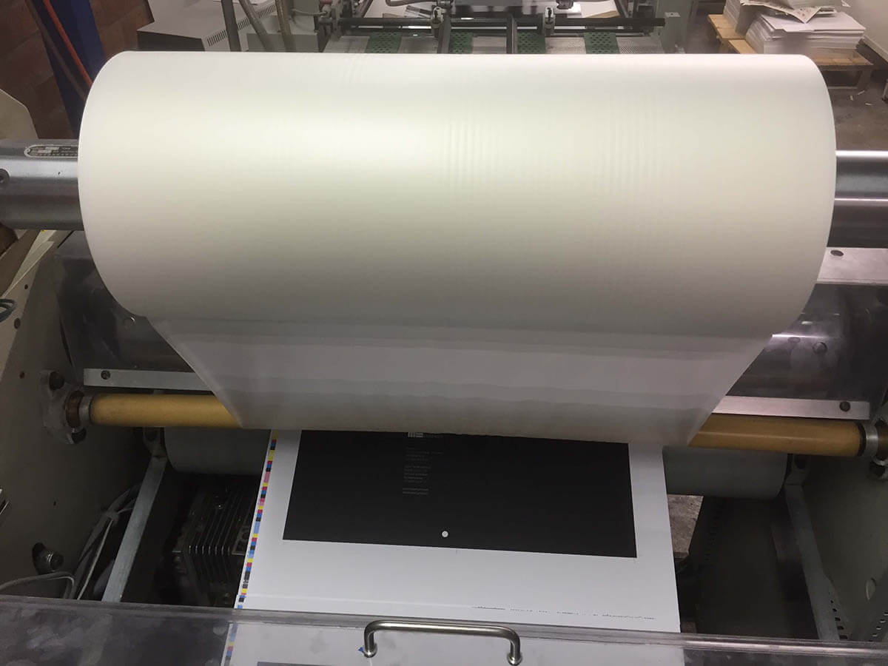

Lamineren
Wat is Lamineren?
Definitie
Lamineren is een afwerkingstechniek waarbij een dunne, transparante plastic laag wordt aangebracht op papier of karton. Dit beschermt het materiaal tegen vuil, water, scheuren en andere beschadigingen, en geeft het een professioneel ogende afwerking.
Voordelen van Lamineren
- Duurzaamheid: Beschermt documenten tegen slijtage, vlekken en vocht, waardoor ze langer meegaan.
- Verbeterde presentatie: Geeft een glanzende of matte afwerking, wat de visuele aantrekkingskracht van het document verhoogt.
- Veelzijdigheid: Kan worden toegepast op verschillende materialen en in verschillende formaten.
Toepassingen van Lamineren
Lamineren wordt vaak gebruikt voor:
- Visitekaartjes: Voor een professionele en duurzame afwerking.
- Menu's: Beschermt menu's in restaurants tegen vlekken en scheuren.
- Posters: Verhoogt de levensduur en duurzaamheid van posters voor binnen- en buitengebruik.
- Documenten: Voor het beschermen van belangrijke papieren zoals diploma's of certificaten.
Hoe Werkt Lamineren?
Bij het lamineren wordt een document tussen twee lagen transparante plastic folie geplaatst. De folie wordt vervolgens verwarmd en onder druk aangebracht, waardoor het stevig aan het document hecht. Afhankelijk van de gewenste afwerking kan er worden gekozen voor glanzende, matte of soft-touch laminaat.
Belangrijke Overwegingen bij Lamineren
- Dikte van de Folie: Verschillende diktes bieden verschillende niveaus van bescherming en stijfheid.
- Afwerkingsopties: Kies tussen glanzend, mat of soft-touch laminaat voor de gewenste uitstraling.
- Milieu-impact: Hoewel lamineren de levensduur van documenten verlengt, is het belangrijk om rekening te houden met de milieu-impact van het gebruik van plastic.